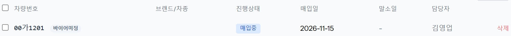
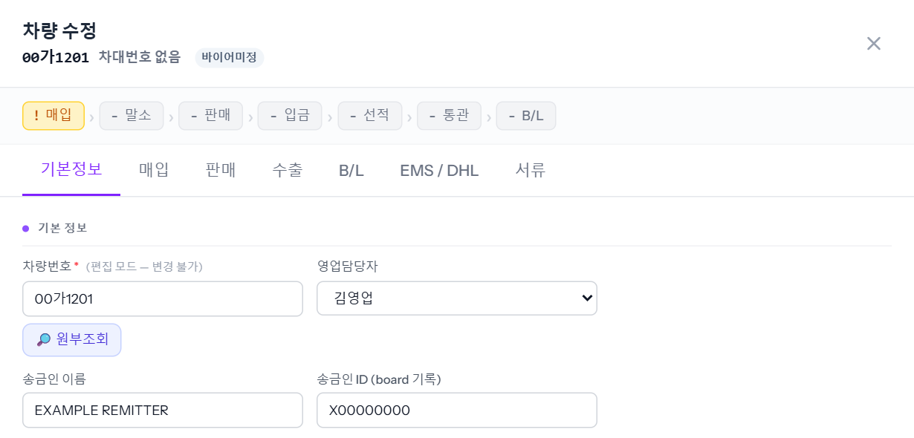
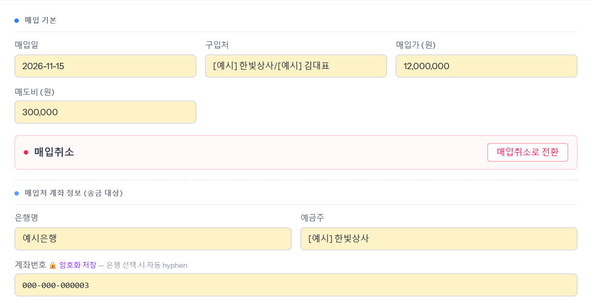

영업이 board 에서 매입을 확정하면 ERP 에 차량이 저절로 만들어집니다. 매입가 · 매도비 · 구입처 · 송금 계좌 · 송금인 · 보관위치까지 함께 들어오니, 관리는 빈 칸만 채우면 됩니다. 예시 차 00가1201 과 계좌·송금인은 가짜입니다.
담당 관리에게 신규 차량 알림톡이 갑니다(받는 사람은 회사 설정). 차량 관리에서 차량번호로 찾으면 매입일이 확정한 날, 담당자가 그 영업으로 들어가 있습니다. 바이어 없이 사 온 재고 매입이면 「바이어미정」 표시가 붙습니다.

바이어 쪽 송금인 이름과 ID(여권 · ID 번호)가 board 에서 넘어옵니다. 브랜드 · 차종 같은 차 정보는 비어 있으니 소유자명을 넣고 [NICE 조회]로 채웁니다(씬 「차량 등록」).

매입일 · 구입처 · 매입가 · 매도비와 매입처 계좌(은행 · 예금주 · 계좌번호)가 들어와 있습니다. 매도비를 다른 곳으로 보내야 하면 board 가 「매도비 계좌」도 따로 넣어 줍니다. 맞는지 보고 지급을 넣습니다(씬 「매입 지급과 딜러 입금완료 알림」).

board 가 보낸 보관위치(예: 야드 · 「인천 야드 3구역」)는 이미 기록돼 있어서, 매입 미지급이 0 이 되는 순간 재고관리에 그 위치로 보입니다. 위치 · 출고일 다루는 법은 씬 「재고관리 — 보관위치·출고일」을 보세요.